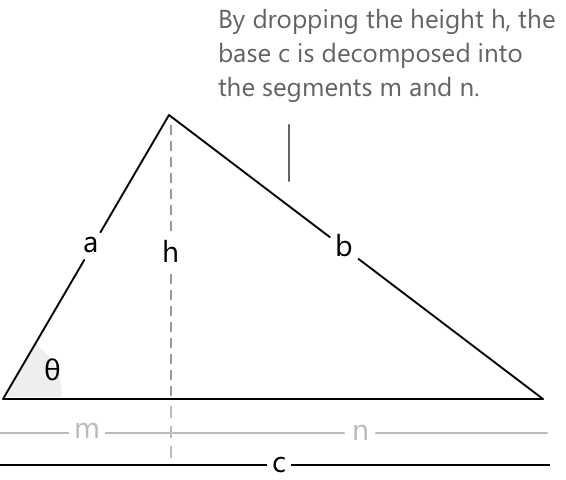

Теорема косинусів
Означення
Теорема косинусів пов'язує сторони будь-якого трикутника через кут, що лежить навпроти однієї з них. Її можна розглядати як узагальнення теореми Піфагора, що є правильною не лише для прямокутних трикутників, а для кожного трикутника: квадрат сторони дорівнює сумі квадратів двох інших сторін мінус поправковий член, який враховує величину кута між ними. Для трикутника зі сторонами \(a, b, c\) та кутом \(\theta\) навпроти сторони \(c\), теорема стверджує:
\[ c^2 = a^2 + b^2 – 2ab \cos(\theta) \]
Коли \(\theta = 90^\circ\), член із косинусом зникає, і формула перетворюється саме на теорему Піфагора, що підтверджує, що теорема косинусів є строгим узагальненням цього результату. Для будь-якого іншого кута поправковий член або віднімається від, або додається до суми \(a^2 + b^2\), залежно від того, чи є \(\theta\) гострим, чи тупим.

Щоб вивести формулу, проведемо висоту \(h\) з вершини, що лежить навпроти \(c\), до сторони \(b\). Це ділить \(b\) на два відрізки: \(m = a\cos(\theta)\) та \(n = b - a\cos(\theta)\), тоді як сама висота задовольняє рівність \(h = a\sin(\theta)\). Застосувавши теорему Піфагора до прямокутного трикутника, утвореного відрізками \(n\), \(h\) та стороною \(c\), отримаємо:
\[ \begin{align} c^2 &= n^2 + h^2 \\[6pt] &= (b – a\cos(\theta))^2 + (a\sin(\theta))^2 \\[6pt] &= b^2 – 2ab\cos(\theta) + a^2\cos^2(\theta) + a^2\sin^2(\theta) \\[6pt] &= b^2 – 2ab\cos(\theta) + a^2(\cos^2(\theta) + \sin^2(\theta)) \end{align} \]
Оскільки основна тригонометрична тотожність дає \(\sin^2(\theta) + \cos^2(\theta) = 1\), вираз спрощується до:
\[ c^2 = a^2 + b^2 - 2ab\cos(\theta) \]
Теорема косинусів часто використовується разом із теоремою синусів, що забезпечує доповнюючий підхід до розв'язання трикутників, коли відомі різні комбінації сторін і кутів.
Приклад 1
Розглянемо трикутник зі сторонами \(a = 8\), \(b = 6\) та прилеглим кутом \(\theta = 60^\circ\). Мета — визначити довжину третьої сторони \(c\). Підставляючи відомі значення в теорему косинусів, отримаємо:
\[ \begin{align} c^2 &= a^2 + b^2 – 2ab\cos(\theta) \\[6pt] &= 64 + 36 – 2(8)(6)\cos(60^\circ) \\[6pt] &= 64 + 36 – 96 \cdot \frac{1}{2} \\[6pt] &= 100 – 48 \\[6pt] &= 52 \end{align} \]
Обчисливши додатний квадратний корінь, отримаємо \(c = \sqrt{52} = 2\sqrt{13} \approx 7.21\).
Довжина третьої сторони становить приблизно \(7.21\) одиниці.
Приклад 2
Розглянемо трикутник зі сторонами \(a = 5\), \(b = 7\) та \(c = 9\). Мета — визначити кут \(\theta\) навпроти сторони \(c\). Виражаючи \(\cos(\theta)\) з теореми косинусів, отримаємо:
\[ \cos(\theta) = \frac{a^2 + b^2 – c^2}{2ab} \]
Підставляючи відомі значення:
\[ \begin{align} \cos(\theta) &= \frac{25 + 49 – 81}{2(5)(7)} \\[6pt] &= \frac{-7}{70} \\[6pt] &= -0.1 \end{align} \]
Оскільки \(\cos(\theta) < 0\), кут \(\theta\) є тупим. Обчислюючи арккосинус, отримаємо:
\[ \theta = \arccos(-0.1) \approx 95.7^\circ \]
Кут, що лежить навпроти найдовшої сторони, становить приблизно \(95.7^\circ\).